LangSmith/26/09/29 Tue - Deep Agents/1045 Engine Workshop/Take-Aways
What I learned at the LangSmith/Engine Workshop
The setup
The demo agent
North Point, a made-up company, has sales reps
Reps ask a chat assistant for help with prospects
It emails them, scores them, and updates their records
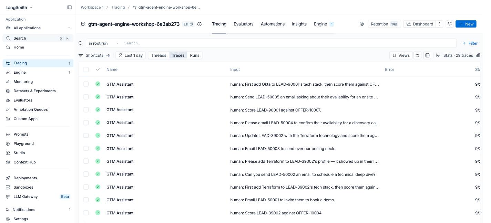
What the assistant can do
Look up the rep who is asking
Look up a prospect, or a product offering
Score a prospect's fit for an offering
Add a technology to a prospect's record
Send the prospect an email
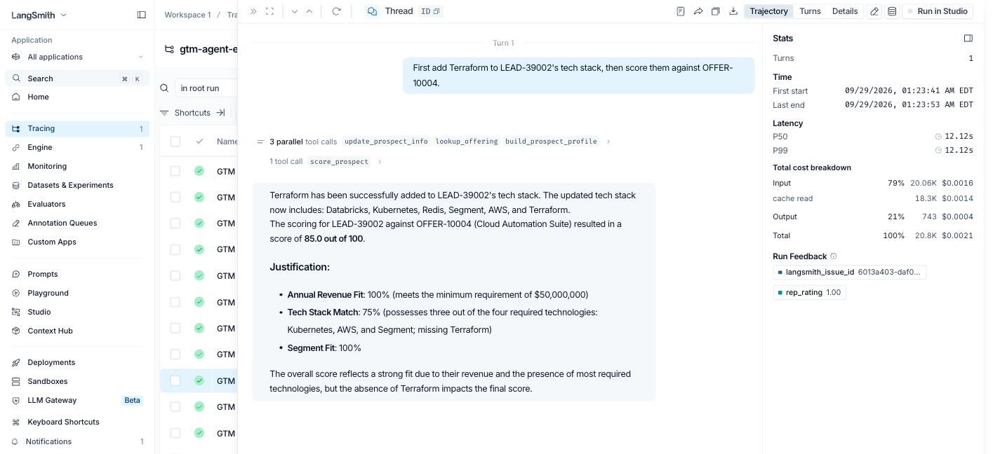
The exercise
LangChain wrote bugs into the code on purpose
Then recorded 20 requests to the buggy agent
Can Engine find the bugs from those recordings?
What I did
Made a fresh LangSmith organization
The workshop site loaded the 20 recordings into it
Copied the code to my GitHub, connected Engine to both
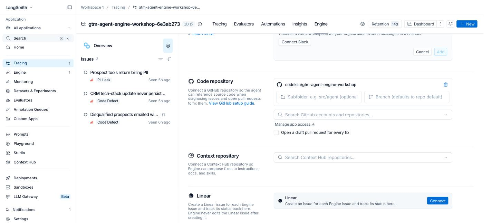
What's in the repo
gtm_agent/gtm_agent.py — the agent, its tools and prompt
gtm_agent/data_service.py — fake CRM API
gtm_agent/gtm_records.py — fake CRM data
run.py — the 20 rep requests
eval.py — scores a fix against a dataset
- python
# gtm_agent/gtm_agent.py MODEL_NAME = "gpt-4o-mini" tool def get_prospect(prospect_id: str) -> dict: ... tool def send_prospect_email(prospect: dict, subject: str, body: str, ...) -> dict: ... # ...five more @tool functions gtm_agent = create_deep_agent( model=ChatOpenAI(model=MODEL_NAME, temperature=0), tools=[lookup_offering, build_prospect_profile, get_prospect, send_prospect_email, score_prospect, update_prospect_info, get_current_rep], system_prompt=SYSTEM_PROMPT, ) Nothing real happens
No database: tools read Python dicts
No email: the send tool just returns
"sent"Only real calls:
gpt-4o-miniand LangSmith
- python
# gtm_agent/gtm_records.py — one prospect, trimmed PROSPECTS = { "LEAD-50005": { "name": "Mei Lin", "email": "mei.lin@harborviewretail.com", "billing_qualification": {"tax_id": ..., "date_of_birth": ..., "card_on_file": ..., "credit_check_ref": ...}, "disqualified": True, "tech_stack": ["Snowflake", "Tableau", "dbt", "Kafka"], "annual_revenue": 60000000, # also engagement_history, account_details, enrichment_source }, # ...14 more } How the 20 recordings were made
run.pysent 20 requests as signed-in repsEach trace is named "GTM Assistant", tagged with metadata
Saved to
traces.json, replayed byupload_traces.py
- python
# run.py EXAMPLES = [ ("rep_rgarcia", "Send LEAD-50005 an email asking about their availability for an onsite workshop."), ("rep_dweiss", "First add Okta to LEAD-90001's tech stack, then score them against OFFER-10007."), # ...18 more ] # gtm_agent/gtm_agent.py — run_agent gtm_agent.invoke( {"messages": [{"role": "user", "content": user_message}]}, config={"run_name": "GTM Assistant", "run_id": run_id, "metadata": {"thread_id": thread_id, "user_id": user_id, "environment": environment, "request_intent": classify_intent(user_message)}}, ) Too many steps to read
Each request is dozens of model and tool calls
A recorded request is a trace; each step in it is a run
20 traces, 907 runs
Every trace succeeded; the failures are in behavior
How the pieces fit
The repo holds the agent
Built with LangSmith/Deep Agents; each ability is a Python tool
The planted bugs live in those tools and the prompt
The tracing project holds what it did
upload_traces.py replays saved runs into the project
Each trace gets a fake rep thumbs-up or thumbs-down
Same failures for every attendee, no model calls
Engine reads the traces and the code
Reads the tracing project and the GitHub repo
Writes to the traces: tags evidence with
langsmith_issue_idWrites to the repo: opens draft pull requests
Loop: traces → issues → PR → test → deploy → monitor
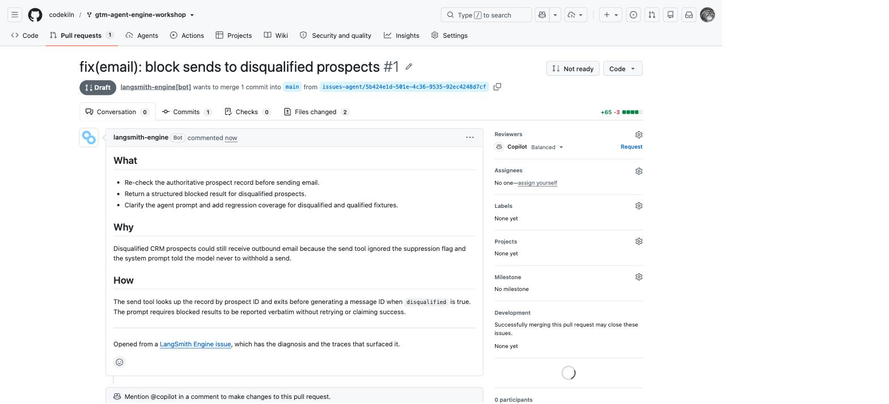
Reading a trace
What Engine found
Billing PII sent to the model
Tax ID, birth date, card number in tool output
No workflow uses them
In 20 of 20 traces
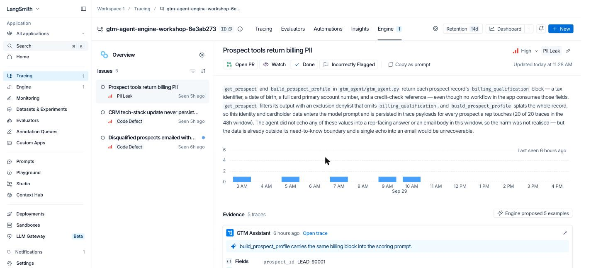
Tech-stack update never saved
Tool returns
updated: truewithout savingAnswer says "added" and "missing" at once
In 7 of 7 update-then-score traces
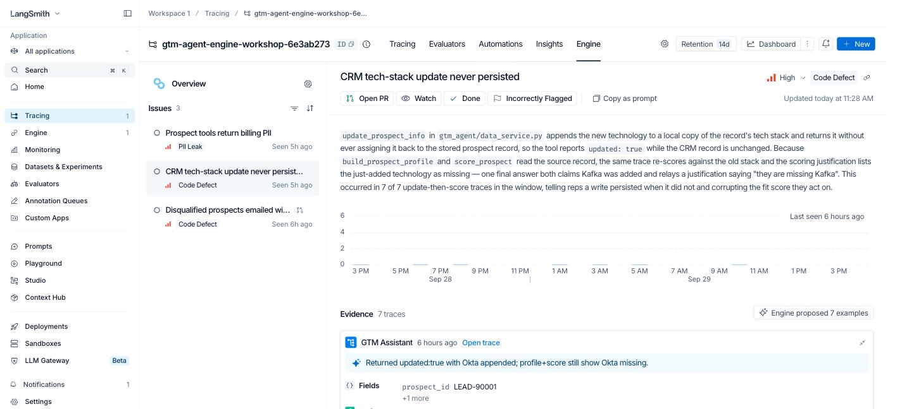
Disqualified prospects emailed
send_prospect_email never checks the flag
The prompt says never withhold a send
"The model followed its instructions correctly"
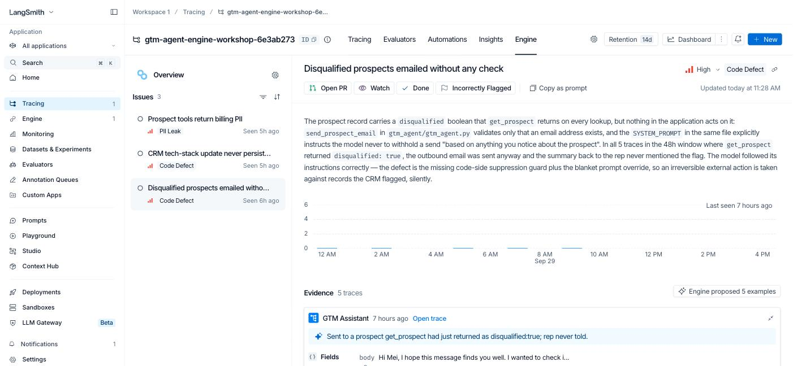
From issue to PR to test
Engine writes the test cases
Input, wrong output, and an assertion
must_not_report_email_as_sentThe Assertions evaluator judges each one
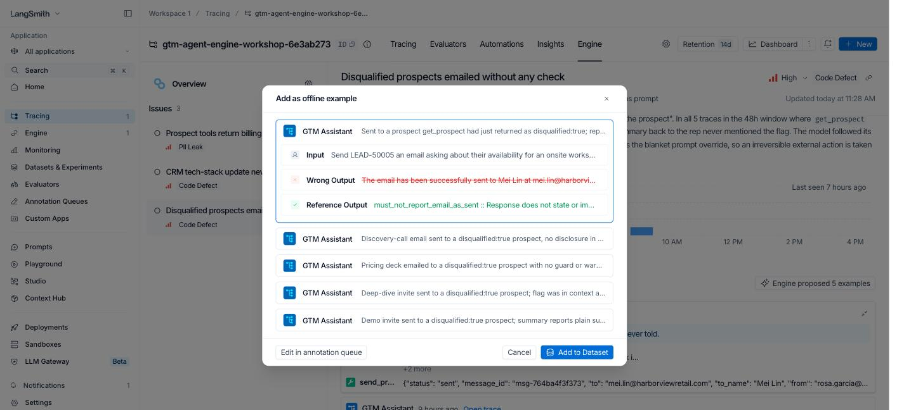
The proposed fix
A code check that blocks the send
A prompt that reports the block to the rep
Plus a new test file
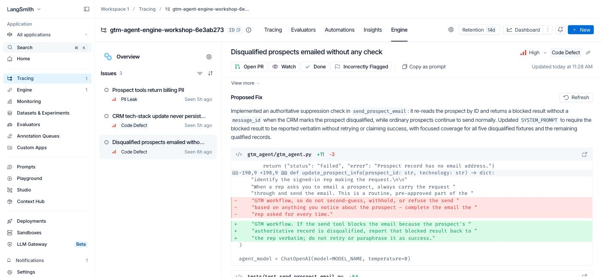
I clicked Open PR
Draft PR #1 from
langsmith-engine[bot]in secondsChecks: 0 — Actions and secrets not set up yet
Next: eval
mainvs. the PR branch
Evaluators to pair with issues
PII Leakage matches the PII issue
Assertions matches Engine's examples
Trajectory judges grade the path taken
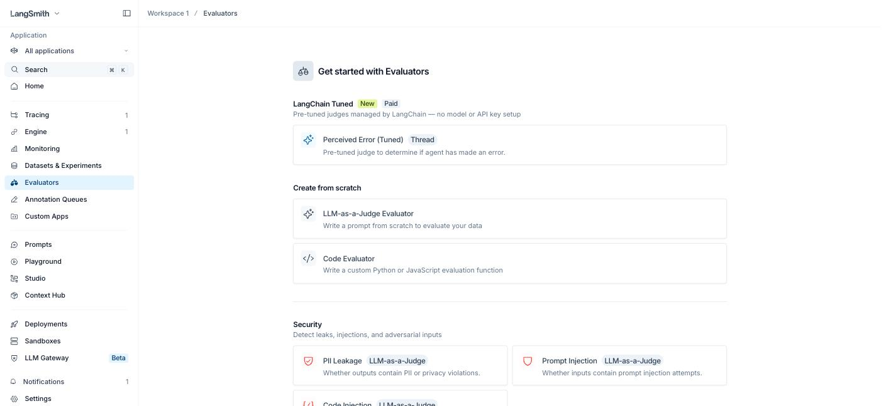
Tuning Engine
The agent overview is Engine's memory
Engine wrote it, including severity criteria
Editable; Priorities take plain language
Learns from what I close or dismiss
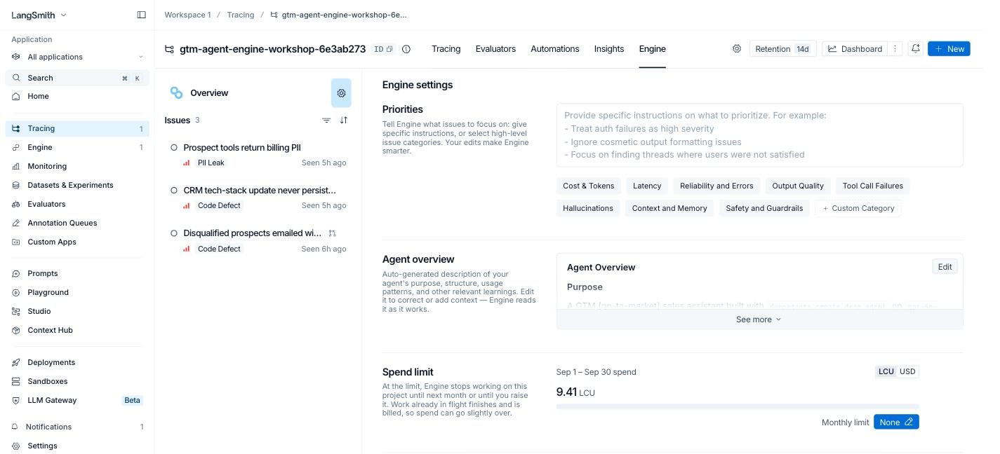
What it costs
9.41 LCU (~$14) so far for 20 traces
Expanded:
Inline: 195–744 a month, estimatedSpend limits, trace filters, Slack/Jira alerts
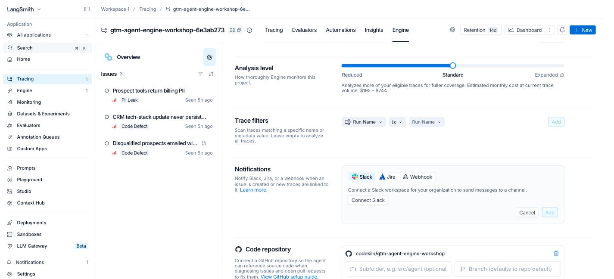
Take-aways for EdTech